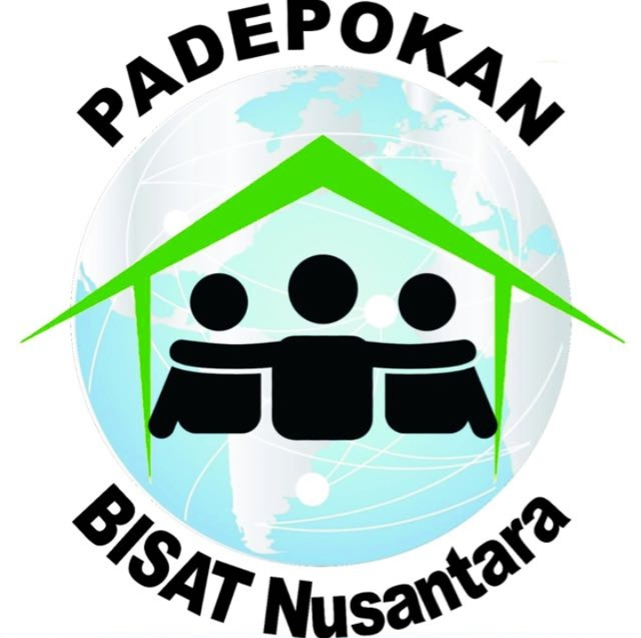

Melayani untuk menjangkau banyak jiwa
"Bersama Pasti Bisa"
Jangan pernah menyerah untuk melakukan hal-hal baik
------------ VISI ------------
*Menjadi Komunitas yang selalu memberikan pelayanan terbaik bagi sesama*
------------ MISI ------------
1.Menjalani setiap amanah pelayanan dengan hati yang tulus.
2.Menjunjung tinggi solidaritas dalam tim pelayanan.
3.Memenangkan banyak jiwa & menjadikan hidup mereka lebih baik.
Anggota
Ayung Lay
Harry Alamsyah
Tetty Agustini
Yustia Oktavianty
Gouw Ye Mei
Pembina
Bpk.Handreas
Bpk.Heru
Bpk.Darmawan
Bpk.Joni
Bpk.Soni
Rekan Terdekat
Rekan
GBP Karawaci
Pelangi Bisat Nusantara

Padepokan Bisat Nusantara
Universitas Pelita Harapan